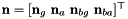

目录
IMU Measurements
We use a 6-axis inertial measurement unit (IMU) to propagate the inertial navigation system (INS), which provides measurements of the local rotational velocity (angular rate) and local translational acceleration :
where and  are the true rotational velocity and translational acceleration in the IMU local frame , and are the gyroscope and accelerometer biases, and are white Gaussian noise, is the gravity expressed in the global frame (noting that the gravity is slightly different on different locations of the globe), and is the rotation matrix from global to IMU local frame.
are the true rotational velocity and translational acceleration in the IMU local frame , and are the gyroscope and accelerometer biases, and are white Gaussian noise, is the gravity expressed in the global frame (noting that the gravity is slightly different on different locations of the globe), and is the rotation matrix from global to IMU local frame.
State Vector
We define our INS state vector at time  as:
as:
where is the unit quaternion representing the rotation global to IMU frame, is the position of IMU in global frame, and  is the velocity of IMU in global frame. We will often write time as a subscript of
is the velocity of IMU in global frame. We will often write time as a subscript of  describing the state of IMU at the time for notation clarity (e.g., ). In order to define the IMU error state, the standard additive error definition is employed for the position, velocity, and biases, while we use the quaternion error state with a left quaternion multiplicative error
describing the state of IMU at the time for notation clarity (e.g., ). In order to define the IMU error state, the standard additive error definition is employed for the position, velocity, and biases, while we use the quaternion error state with a left quaternion multiplicative error  :
:
where is the rotation axis and is the rotation angle. For small rotation, the error angle vector is approximated by as the error vector about the three orientation axes. The total IMU error state thus is defined as the following 15x1 (not 16x1) vector:
IMU Kinematics
The IMU state evolves over time as follows (see Indirect Kalman Filter for 3D Attitude Estimation [22]).
![\begin{align*} \newcommand{\comm}[1]{} ^I_G\dot{\bar{q}}(t) \comm{ &= \lim_{\delta t \to 0} \frac{1}{\delta t} (^{I_{t + \delta t}}_G\bar{q} - \text{}^{I_{t}}_G\bar{q})\\ &= \lim_{\delta t \to 0} \frac{1}{\delta t} (^{I_{t + \delta t}}_{L_{t}}\bar{q} \otimes ^{I_{t}}_{G}\bar{q} - \bar{q}_0 \otimes \text{}^{I_{t}}_G\bar{q})\\ &= \lim_{\delta t \to 0} \frac{1}{\delta t} (^{I_{t + \delta t}}_{L_{t}}\bar{q} - \bar{q}_0 ) \otimes \text{}^{I_{t}}_{G}\bar{q}\\ &\approx \lim_{\delta t \to 0} \frac{1}{\delta t} \Bigg (\begin{bmatrix} \frac{1}{2}\delta \boldsymbol{\theta}\\ 1 \end{bmatrix} -\begin{bmatrix} \boldsymbol{0}\\ 1 \end{bmatrix} \Bigg ) \otimes \text{}^{I_{t}}_{G}\bar{q} \\ &= \frac{1}{2} \begin{bmatrix} \boldsymbol{\omega}\\ 0 \end{bmatrix} \otimes \text{}^{I_{t}}_{G}\bar{q}\\} &= \frac{1}{2} \begin{bmatrix} -\lfloor \boldsymbol{\omega}(t) \times \rfloor && \boldsymbol{\omega}(t) \\ -\boldsymbol{\omega}^\top(t) && 0 \end{bmatrix} \text{}^{I_{t}}_{G}\bar{q}\\ &=: \frac{1}{2} \boldsymbol{\Omega}(\boldsymbol{\omega}(t)) \text{}^{I_{t}}_{G}\bar{q}\\ ^G\dot{\mathbf{p}}_I(t) &=\text{} ^G\mathbf{v}_I(t)\\ ^G\dot{\mathbf{v}}_I(t) &=\text{} ^{I_{t}}_G\mathbf{R}^\top\mathbf{a}(t) \\ \dot{\mathbf{b}}_{\mathbf{g}}(t) &= \mathbf{n}_{wg}\\ \dot{\mathbf{b}}_{\mathbf{a}}(t) &= \mathbf{n}_{wa} \end{align*}](form_74.png)
where we have modeled the gyroscope and accelerometer biases as random walk and thus their time derivatives are white Gaussian. Note that the above kinematics have been defined in terms of the true acceleration and angular velocities.
Continuous-time IMU Propagation
Given the continuous-time measurements and in the time interval , and their estimates, i.e. after taking the expectation, and , we can define the solutions to the above IMU kinematics differential equation. The solution to the quaternion evolution has the following general form:
Differentiating and reordering the terms yields the governing equation for as
with . If we take to be constant over the the period , then the above system is linear time-invarying (LTI), and can be solved as (see [Stochastic Models, Estimation, and Control] [15]):
where the approximation assumes small . We can formulate the quaternion propagation from to using the estimated rotational velocity as:
Having defined the integration of the orientation, we can integrate the velocity and position over the measurement interval:
![\begin{align*} ^G\hat{\mathbf{v}}_{k+1} &= \text{}^G\hat{\mathbf{v}}_{I_k} + \int_{t_{k}}^{t_{k+1}} {^G\hat{\mathbf{a}}(\tau)} d\tau \\ &= \text{}^G\hat{\mathbf{v}}_{I_k} - {}^G\mathbf{g}\Delta t+ \int_{t_{k}}^{t_{k+1}} {^G_{I_{\tau}}\hat{\mathbf{R}}(\mathbf{a}_m(\tau) - \hat{\mathbf{b}}_{\mathbf{a}}(\tau)) d\tau}\\[1em] ^G\hat{\mathbf{p}}_{I_{k+1}} &= \text{}^G\hat{\mathbf{p}}_{I_k} + \int_{t_{k}}^{t_{k+1}} {^G\hat{\mathbf{v}}_I(\tau)} d\tau \\ &= \text{}^G\hat{\mathbf{p}}_{I_k} + \text{}^G\hat{\mathbf{v}}_{I_k} \Delta t - \frac{1}{2}{}^G\mathbf{g}\Delta t^2 + \int_{t_{k}}^{t_{k+1}} \int_{t_{k}}^{s} {^G_{I_{\tau}}\hat{\mathbf{R}}(\mathbf{a}_m(\tau) - \hat{\mathbf{b}}_{\mathbf{a}}(\tau)) d\tau ds} \end{align*}](form_93.png)
Propagation of each bias and is given by:
The biases will not evolve since our random walk noises and are zero-mean white Gaussian. All of the above integrals could be analytically or numerically solved if one wishes to use the continuous-time measurement evolution model.
Discrete-time IMU Propagation
A simpler method is to model the measurements as discrete-time over the integration period. To do this, the measurements can be assumed to be constant during the sampling period. We employ this assumption and approximate that the measurement at time remains the same until we get the next measurement at . For the quaternion propagation, it is the same as continuous-time propagation with constant measurement assumption . We use subscript  to denote it is the measurement we get at time . Therefore the propagation of quaternion can be written as:
to denote it is the measurement we get at time . Therefore the propagation of quaternion can be written as:
For the velocity and position propagation we have constant over ![$t \in [t_k, t_{k+1}]$](form_102.png) . We can therefore directly solve for the new states as:
. We can therefore directly solve for the new states as:
The propagation of each bias is likewise the continuous system:
Discrete-time Error-state Propagation
In order to propagate the covariance matrix, we should derive the error-state propagation, i.e., computing the system Jacobian and noise Jacobian . In particular, when the covariance matrix of the continuous-time measurement noises is given by , then the discrete-time noise covariance can be computed as (see [Indirect Kalman Filter for 3D Attitude Estimation] [22] Eq. (129) and (130)):
![\begin{align*} \sigma_{g} &= \frac{1}{\sqrt{\Delta t}}~ \sigma_{g_c} \\ \sigma_{bg} &= \sqrt{\Delta t}~ \sigma_{bg_c} \\[1em] \mathbf{Q}_{meas} &= \begin{bmatrix} \frac{1}{\Delta t}~ \sigma_{g_c}^2~ \mathbf{I}_3 & \mathbf{0}_3 \\ \mathbf{0}_3 & \frac{1}{\Delta t}~ \sigma_{a_c}^2~ \mathbf{I}_3 \end{bmatrix} \\ \mathbf{Q}_{bias} &= \begin{bmatrix} \Delta t~ \sigma_{bg_c}^2~ \mathbf{I}_3 & \mathbf{0}_3 \\ \mathbf{0}_3 & \Delta t~ \sigma_{ba_c}^2~ \mathbf{I}_3 \end{bmatrix} \end{align*}](form_109.png)
where  are the discrete IMU sensor noises which have been converted from their continuous representations. We define the stacked discrete measurement noise as follows:
The method of computing Jacobians is to "perturb" each variable in the system and see how the old error "perturbation" relates to the new error state. That is, and can be found by perturbing each variable as:
For the orientation error propagation, we start with the perturbation using  :
:
![\begin{align*} {}^{I_{k+1}}_G \mathbf{R} &= \text{}^{I_{k+1}}_{I_{k}} \mathbf{R} \text{}^{I_{k}}_G \mathbf{R} \\ (\mathbf{I}_3 - \lfloor ^{I_{k+1}}_{G}\tilde{\boldsymbol{\theta}}\times\rfloor)^{I_{k+1}}_{G} \hat{\mathbf{R}} &\approx \textrm{exp}(-{}^{I_{k}}\hat{\boldsymbol{\omega}}\Delta t - {}^{I_{k}}\tilde{\boldsymbol{\omega}}\Delta t) (\mathbf{I}_3 - \lfloor ^{I_{k}}_{G}\tilde{\boldsymbol{\theta}}\times\rfloor)^{I_{k}}_{G} \hat{\mathbf{R}}\\ &=\textrm{exp}(-{}^{I_{k}}\hat{\boldsymbol{\omega}}\Delta t)\textrm{exp}(-\mathbf{J}_r(-{}^{I_{k}}\hat{\boldsymbol{\omega}}\Delta t){}^{I_{k}}\tilde{\boldsymbol{\omega}}\Delta t) (\mathbf{I}_3 - \lfloor ^{I_{k}}_{G}\tilde{\boldsymbol{\theta}}\times\rfloor)^{I_{k}}_{G} \hat{\mathbf{R}}\\ &=\text{}^{I_{k+1}}_{I_{k}} \hat{\mathbf{R}} (\mathbf{I}_3 - \lfloor \mathbf J_r(-{}^{I_{k}}\hat{\boldsymbol{\omega}}\Delta t) \tilde{\boldsymbol{\omega}}_k\Delta t \times\rfloor) (\mathbf{I}_3 - \lfloor ^{I_k}_{G}\tilde{\boldsymbol{\theta}}\times\rfloor) \text{}^{I_{k}}_G \hat{\mathbf{R}} \end{align*}](form_115.png)
where  handles both the perturbation to the bias and measurement noise. is the right Jacobian of that maps the variation of rotation angle in the parameter vector space into the variation in the tangent vector space to the manifold [see ov_core::Jr_so3()]. By neglecting the second order terms from above, we obtain the following orientation error propagation:
handles both the perturbation to the bias and measurement noise. is the right Jacobian of that maps the variation of rotation angle in the parameter vector space into the variation in the tangent vector space to the manifold [see ov_core::Jr_so3()]. By neglecting the second order terms from above, we obtain the following orientation error propagation:
Now we can do error propagation of position and velocity using the same scheme:
![\begin{align*} ^G\mathbf{p}_{I_{k+1}} &= \text{}^G\mathbf{p}_{I_k} + \text{}^G\mathbf{v}_{I_k} \Delta t - \frac{1}{2}{}^G\mathbf{g}\Delta t^2 + \frac{1}{2}\text{}^{I_k}_G\mathbf{R}^\top \mathbf{a}_{k}\Delta t^2\\ ^G\hat{\mathbf{p}}_{I_{k+1}} + \text{}^G\tilde{\mathbf{p}}_{I_{k+1}} &\approx \text{}^G\hat{\mathbf{p}}_{I_k} + \text{}^G\tilde{\mathbf{p}}_{I_k} + \text{}^G\hat{\mathbf{v}}_{I_k} \Delta t + \text{}^G\tilde{\mathbf{v}}_{I_k} \Delta t - \frac{1}{2}{}^G\mathbf{g}\Delta t^2\\ &\hspace{4cm} + \frac{1}{2} \text{}^{I_k}_{G}\hat{\mathbf{R}}^\top (\mathbf{I}_3 + \lfloor ^{I_{k}}_{G}\tilde{\boldsymbol{\theta}}\times\rfloor) (\hat{\mathbf{a}}_{k} + \tilde{\mathbf{a}}_{k})\Delta t^2\\ \\ ^G\mathbf{v}_{k+1} &= \text{}^G\mathbf{v}_{I_k} - {}^G\mathbf{g}\Delta t +\text{}^{I_k}_G\mathbf{R}^\top\mathbf{a}_{k}\Delta t\\ ^G\hat{\mathbf{v}}_{k+1} + ^G\tilde{\mathbf{v}}_{k+1} &\approx {}^G\hat{\mathbf{v}}_{I_k} + {}^G\tilde{\mathbf{v}}_{I_k} - {}^G\mathbf{g}\Delta t + \text{}^{I_k}_G\hat{\mathbf{R}}^\top (\mathbf{I}_3 + \lfloor ^{I_{k}}_{G}\tilde{\boldsymbol{\theta}}\times\rfloor) (\hat{\mathbf{a}}_{k} + \tilde{\mathbf{a}}_{k})\Delta t \end{align*}](form_119.png)
where . By neglecting the second order error terms, we obtain the following position and velocity error propagation:
![\begin{align*} \text{}^G\tilde{\mathbf{p}}_{I_{k+1}} &= \text{}^G\tilde{\mathbf{p}}_{I_k} + \Delta t \text{}^G\tilde{\mathbf{v}}_{I_k} - \frac{1}{2}\text{}^{I_k}_{G}\hat{\mathbf{R}}^\top \lfloor \hat{\mathbf{a}}_{k} \Delta t^2 \times\rfloor ^{I_{k}}_{G}\tilde{\boldsymbol{\theta}} - \frac{1}{2} \text{}^{I_k}_{G}\hat{\mathbf{R}}^\top \Delta t^2 (\tilde{\mathbf{b}}_{\mathbf{a},k} + \mathbf{n}_{\mathbf{a},k})\\ ^G\tilde{\mathbf{v}}_{k+1} &= \text{}^G\tilde{\mathbf{v}}_{I_k} - \text{}^{I_k}_G\hat{\mathbf{R}}^\top \lfloor \hat{\mathbf{a}}_{k} \Delta t \times\rfloor ^{I_{k}}_{G}\tilde{\boldsymbol{\theta}} - \text{}^{I_k}_G\hat{\mathbf{R}}^\top \Delta t (\tilde{\mathbf{b}}_{\mathbf{a},k} + \mathbf{n}_{\mathbf{a},k}) \end{align*}](form_121.png)
The propagation of the two random-walk biases are as follows:
![\begin{align*} \mathbf{b}_{\mathbf{g},k+1} &= \mathbf{b}_{\mathbf{g},k} + \mathbf{n}_{wg} \\ \hat{\mathbf{b}}_{\mathbf{g},k+1} + \tilde{\mathbf{b}}_{\mathbf{g},k+1} &= \hat{\mathbf{b}}_{\mathbf{g},k} + \tilde{\mathbf{b}}_{\mathbf{g},k} + \mathbf{n}_{wg} \\ \tilde{\mathbf{b}}_{\mathbf{g},k+1} &= \tilde{\mathbf{b}}_{\mathbf{g},k} + \mathbf{n}_{wg} \\[1em] \mathbf{b}_{\mathbf{a},k+1} &= \mathbf{b}_{\mathbf{a},k} + \mathbf{n}_{wa} \\ \hat{\mathbf{b}}_{\mathbf{a},k+1} + \tilde{\mathbf{b}}_{\mathbf{a},k+1} &= \hat{\mathbf{b}}_{\mathbf{a},k} + \tilde{\mathbf{b}}_{\mathbf{a},k} + \mathbf{n}_{wa} \\ \tilde{\mathbf{b}}_{\mathbf{a},k+1} &= \tilde{\mathbf{b}}_{\mathbf{a},k} + \mathbf{n}_{wa} \end{align*}](form_122.png)
By collecting all the perturbation results, we can build and matrices as:
![\begin{align*} \boldsymbol{\Phi}(t_{k+1},t_k) &= \begin{bmatrix} \text{}^{I_{k+1}}_{I_{k}}\hat{\mathbf{R}} & \mathbf{0}_3 & \mathbf{0}_3 & - \text{}^{I_{k+1}}_{I_{k}}\hat{\mathbf{R}}\mathbf J_r(\text{}^{I_{k+1}}_{I_{k}}\hat{\boldsymbol{\theta}}) \Delta t & \mathbf{0}_3 \\ - \frac{1}{2}\text{}^{I_k}_{G}\hat{\mathbf{R}}^\top \lfloor \hat{\mathbf{a}}_{k} \Delta t^2 \times\rfloor & \mathbf{I}_3 & \Delta t \mathbf{I}_3 & \mathbf{0}_3 & - \frac{1}{2} \text{}^{I_k}_{G}\hat{\mathbf{R}}^\top \Delta t^2 \\ - \text{}^{I_k}_G\hat{\mathbf{R}}^\top \lfloor \hat{\mathbf{a}}_{k} \Delta t \times\rfloor & \mathbf{0}_3 & \mathbf{I}_3 & \mathbf{0}_3 & - \text{}^{I_k}_G\hat{\mathbf{R}}^\top \Delta t \\ \mathbf{0}_3 & \mathbf{0}_3 & \mathbf{0}_3 & \mathbf{I}_3 & \mathbf{0}_3 \\ \mathbf{0}_3 & \mathbf{0}_3 & \mathbf{0}_3 & \mathbf{0}_3 & \mathbf{I}_3 \end{bmatrix} \end{align*}](form_123.png)
![\begin{align*} \mathbf{G}_{k} &= \begin{bmatrix} - \text{}^{I_{k+1}}_{I_{k}}\hat{\mathbf{R}}\mathbf J_r(\text{}^{I_{k+1}}_{I_{k}}\hat{\boldsymbol{\theta}}) \Delta t & \mathbf{0}_3 & \mathbf{0}_3 & \mathbf{0}_3 \\ \mathbf{0}_3 & - \frac{1}{2} \text{}^{I_k}_{G}\hat{\mathbf{R}}^\top \Delta t^2 & \mathbf{0}_3 & \mathbf{0}_3 \\ \mathbf{0}_3 & - \text{}^{I_k}_G\hat{\mathbf{R}}^\top \Delta t & \mathbf{0}_3 & \mathbf{0}_3 \\ \mathbf{0}_3 & \mathbf{0}_3 & \mathbf{I}_3 & \mathbf{0}_3 \\ \mathbf{0}_3 & \mathbf{0}_3 & \mathbf{0}_3 & \mathbf{I}_3 \end{bmatrix} \end{align*}](form_124.png)
Now, with the computed and matrices, we can propagate the covariance from to :